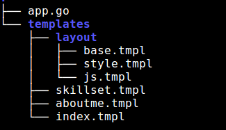

Golang Template-2: Template composition
Golang template library provides certain actions to make an efficient and flexible use of multiple template files. define action
{{define "templ_name"}}second template{{end}}
Here, a template with name “templ_name” is defined.
// defineActionDemo.go
package main
import (
"fmt"
"html/template"
"os"
)
var defineDemo = `
{{ define "a" }} Template A {{ end }}
{{define "b"}} Template B {{end}}
`
func main() {
var err error
t := template.New("defineActionDemo")
t, err = t.Parse(defineDemo)
if err != nil {
fmt.Println("parsing failed: %s", err)
}
err = t.ExecuteTemplate(os.Stdout, "a", nil)
if err != nil {
fmt.Println("execution failed: %s", err)
}
fmt.Println()
err = t.ExecuteTemplate(os.Stdout, "b", nil)
if err != nil {
fmt.Println("execution failed: %s", err)
}
}
c:\medium\src>go build defineActionDemo.go c:\medium\src>defineActionDemo
Template A Template B
If there multiple definitions of same template, except one, all other should be empty.
template action
{{template "templ_name" }}
{{template "templ_name" pipeline}}
Here, the template with name “templ_name” will be executed and output will be rendered at the same place.
Output
Template A includes Template B
Template B
Template A ends
// templateActionDemo.go
package main
import (
"html/template"
"os"
"fmt"
)
var templateDemo =
`
{{ define "a" }}
Template A includes Template B
{{ template "b" .}}
Template A ends
{{ end }}
{{define "b"}}
Template B
{{end}}
`
func main() {
var err error
t := template.New("templateActionDemo")
t, err = t.Parse(templateDemo)
if err != nil {
fmt.Println("parsing failed: %s", err)
}
err = t.ExecuteTemplate(os.Stdout, "a", nil)
if err != nil {
fmt.Println("execution failed: %s", err)
}
}
block action
Block action is defining a template and executing in place.
{{block "name" pipeline}} huuw {{end}}
// blockActionDemo.go
package main
import (
"fmt"
"html/template"
"os"
)
var templateDemo = `
{{ define "a" }}
Template A includes Template B
{{ block "b" .}} Template B {{ end }}
Template A ends
{{ end }}
`
func main() {
var err error
t := template.New("templateActionDemo")
t, err = t.Parse(templateDemo)
if err != nil {
fmt.Println("parsing failed: %s", err)
}
err = t.ExecuteTemplate(os.Stdout, "a", nil)
if err != nil {
fmt.Println("execution failed: %s", err)
}
}
Output
Template A includes Template B
Template B Template A ends
All these three actions are very powerful.
- Template composition(nested template or template embedding or template inheritance) can be achieved.
- Empty template can be used as placeholder templates.
How to organize template files ?
We keep our template files in two directories. One is the layout and other is the application specific views. The layout will contain base template and other common templates.

base.tmpl will contain the skeleton of HTML page for the entire website.
<!-- base.tmpl -->
{{ define "base" }}
<html>
<head>
<title>{{block "title" .}} {{end}}</title>
{{block "style" .}} {{end}}
</head>
<body>
<body>
{{template "content" .}}
</body>
<footer>{{block "footer" .}} {{end}}</footer>
{{block "js" .}} {{end}}
</body>
</html>
{{ end }}
<!-- js.tmpl -->
{{ define "js" }}
<script type="javascript">
console.log("a small js");
</script>
{{ end }}
<!-- style.tmpl -->
{{define "style"}}
<style>
body {
background-color: lightblue;
}
h1 {
color: navy;
margin-left: 20px;
}
</style>
{{end}}
Now, all other templates which is a view to user. Each of these will be rendered individually.
<!-- aboutme.tmpl -->
{{define "title"}}About Me{{end}}
{{define "content"}}
<h2>This is About me page.</h2>
<ul>
<li>My name is {{ .Name }}. </li>
<li>My home city is {{ .City }}. </li>
<li>My nationaliy is {{ .Nationality }}. </li>
</ul>
<p><a href="/">Home</a></p>
{{end}}
<!-- index.tmpl -->
{{define "title"}}Home{{end}}
{{define "content"}}
<ul>
<li><a href="/skillset">Skillset</a></li>
<li><a href="/aboutme">About Me</a></li>
</ul>
{{end}}
<!-- skillset.tmpl -->
{{define "title"}}Skillset{{end}}
{{define "content"}}
<h3>My Skillset</h3>
<table class="table">
<thead>
<tr>
<th>Language</th>
<th>Level</th>
</tr>
</thead>
<tbody>
{{ range . }}
<tr>
<td>{{ .Language }}</td>
<td>{{ .Level }}</td>
</tr>
{{ end }}
</tbody>
</table>
<p> <a href="/">Home</a></p>
{{end}}
In Go, we need to do the following.
//golang
package main
import (
"fmt"
"github.com/oxtoacart/bpool"
"html/template"
"log"
"net/http"
"path/filepath"
)
var templates map[string]*template.Template
var bufpool *bpool.BufferPool
type UserData struct {
Name string
City string
Nationality string
}
type SkillSet struct {
Language string
Level string
}
type TemplateConfig struct {
TemplateLayoutPath string
TemplateIncludePath string
}
type SkillSets []*SkillSet
var mainTmpl = `{{define "main" }} {{ template "base" . }} {{ end }}`
var templateConfig TemplateConfig
func loadConfiguration() {
templateConfig.TemplateLayoutPath = "templates/layouts/"
templateConfig.TemplateIncludePath = "templates/"
}
func loadTemplates() {
if templates == nil {
templates = make(map[string]*template.Template)
}
layoutFiles, err := filepath.Glob(templateConfig.TemplateLayoutPath + "*.tmpl")
if err != nil {
log.Fatal(err)
}
includeFiles, err := filepath.Glob(templateConfig.TemplateIncludePath + "*.tmpl")
if err != nil {
log.Fatal(err)
}
mainTemplate := template.New("main")
mainTemplate, err = mainTemplate.Parse(mainTmpl)
if err != nil {
log.Fatal(err)
}
for _, file := range includeFiles {
fileName := filepath.Base(file)
files := append(layoutFiles, file)
templates[fileName], err = mainTemplate.Clone()
if err != nil {
log.Fatal(err)
}
templates[fileName] = template.Must(templates[fileName].ParseFiles(files...))
}
log.Println("templates loading successful")
bufpool = bpool.NewBufferPool(64)
log.Println("buffer allocation successful")
}
func renderTemplate(w http.ResponseWriter, name string, data interface{}) {
tmpl, ok := templates[name]
if !ok {
http.Error(w, fmt.Sprintf("The template %s does not exist.", name),
http.StatusInternalServerError)
}
buf := bufpool.Get()
defer bufpool.Put(buf)
err := tmpl.Execute(buf, data)
if err != nil {
http.Error(w, err.Error(), http.StatusInternalServerError)
}
w.Header().Set("Content-Type", "text/html; charset=utf-8")
buf.WriteTo(w)
}
func index(w http.ResponseWriter, r *http.Request) {
renderTemplate(w, "index.tmpl", nil)
}
func aboutMe(w http.ResponseWriter, r *http.Request) {
userData := &UserData{Name: "Asit Dhal", City: "Bhubaneswar", Nationality: "Indian"}
renderTemplate(w, "aboutme.tmpl", userData)
}
func skillSet(w http.ResponseWriter, r *http.Request) {
skillSets := SkillSets{&SkillSet{Language: "Golang", Level: "Beginner"},
&SkillSet{Language: "C++", Level: "Advanced"},
&SkillSet{Language: "Python", Level: "Advanced"}}
renderTemplate(w, "skillset.tmpl", skillSets)
}
func main() {
loadConfiguration()
loadTemplates()
server := http.Server{
Addr: "127.0.0.1:8080",
}
http.HandleFunc("/", index)
http.HandleFunc("/aboutme", aboutMe)
http.HandleFunc("/skillset", skillSet)
server.ListenAndServe()
}
Before the application starts to listen for HTTP request, all template files are loaded. Every time there is a request, the specific template is executed.
Working example: https://github.com/asit-dhal/golang-template-layout.
Thanks for reading !!